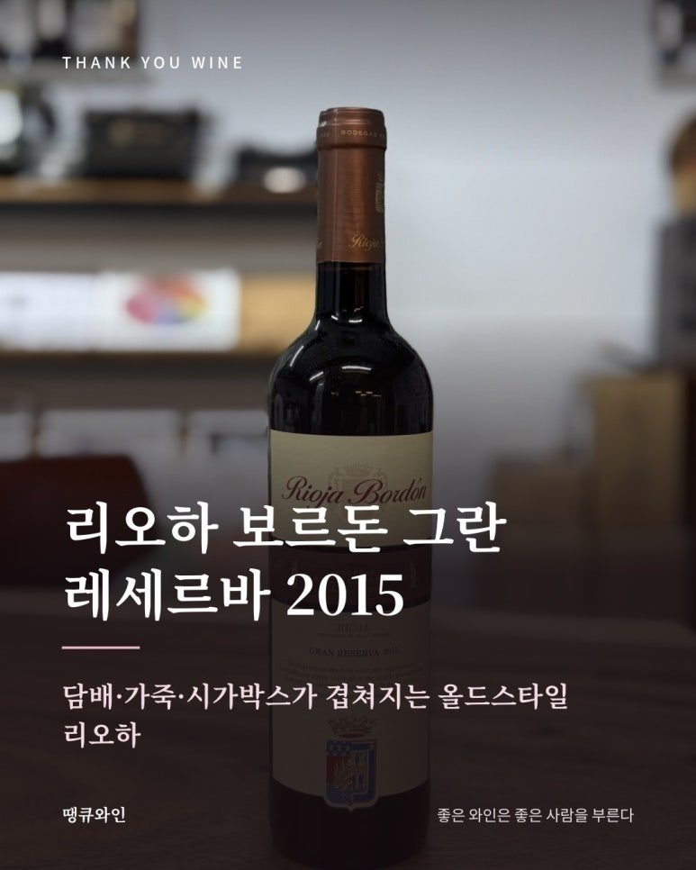
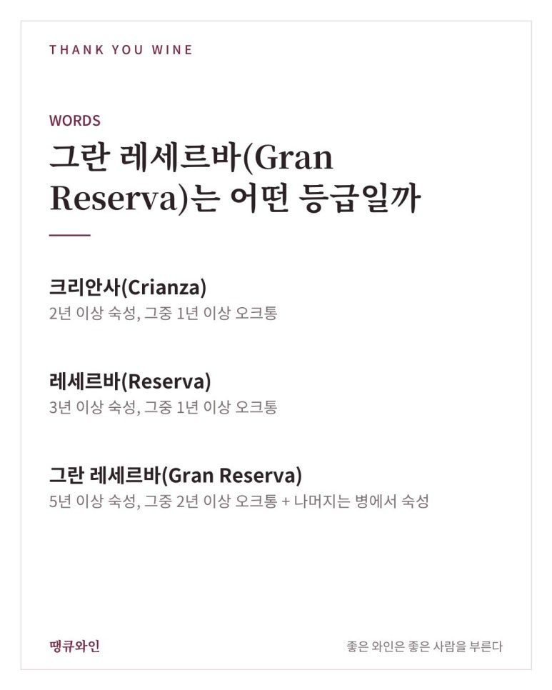
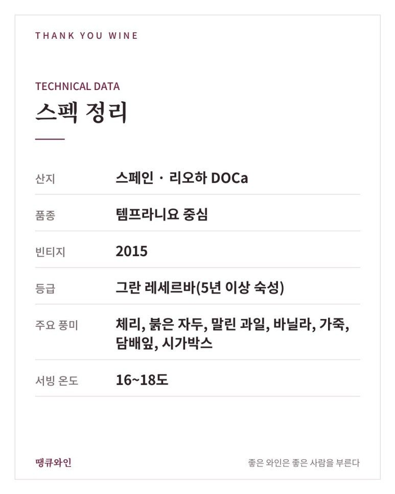
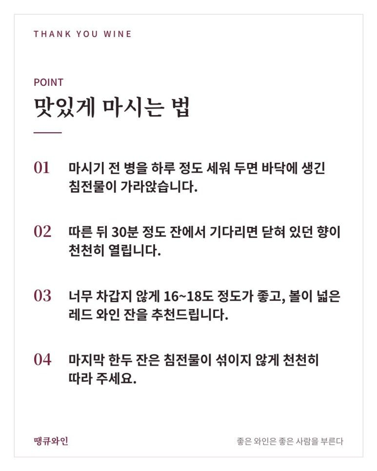
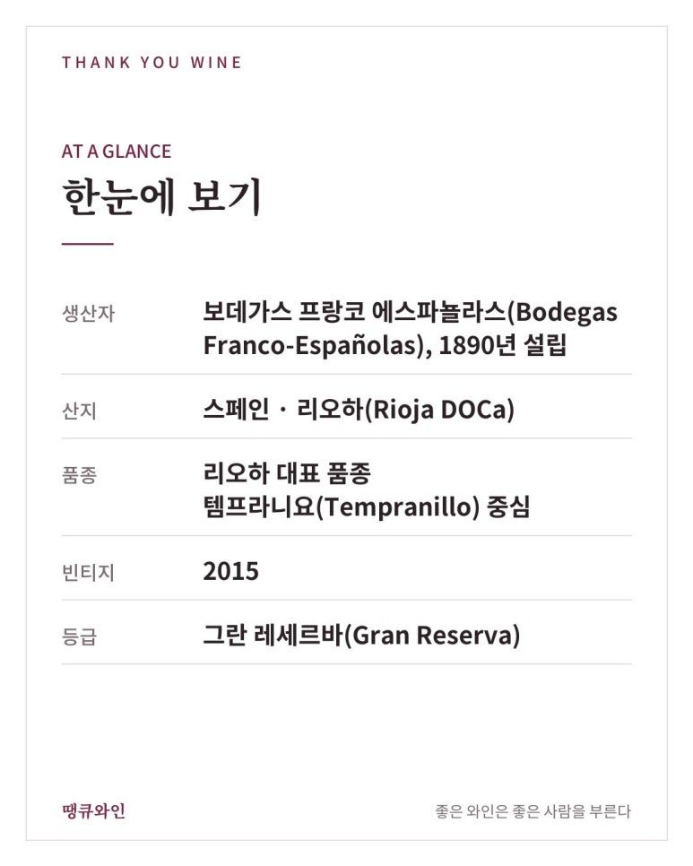
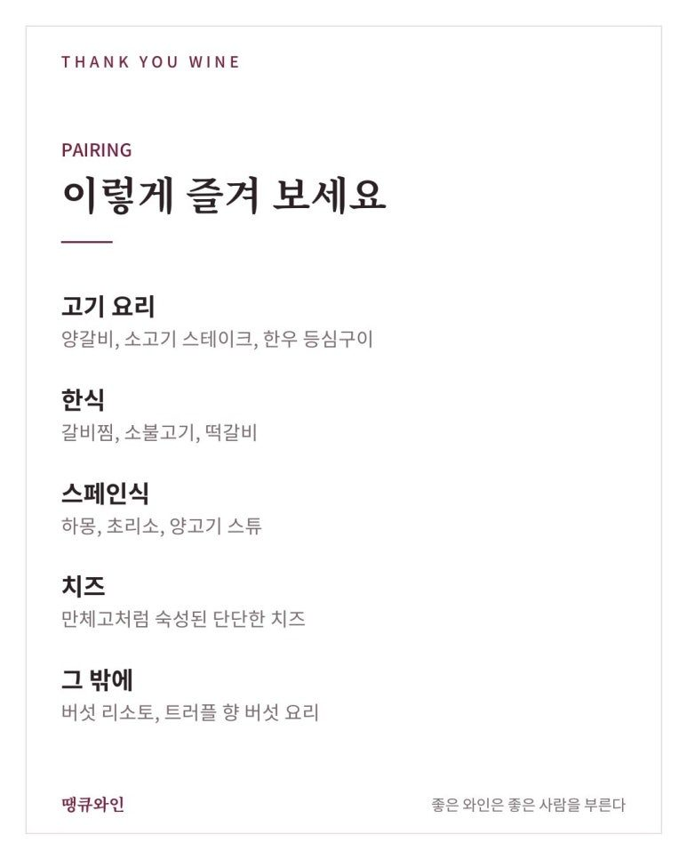
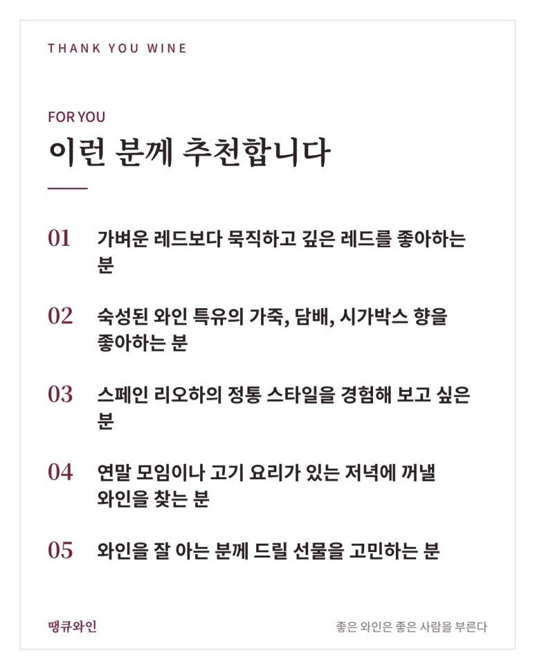
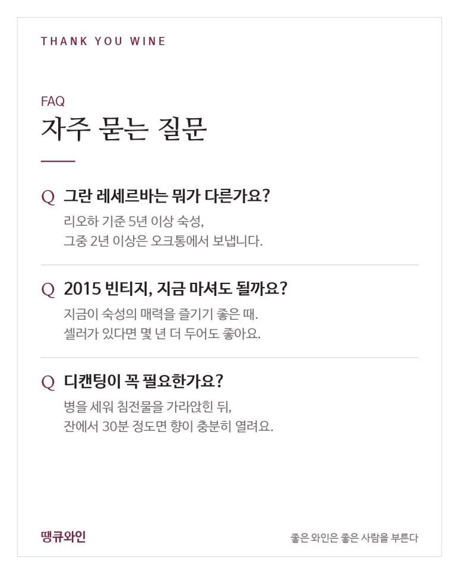

리오하 보르돈 그란 레세르바 2015
담배·가죽·시가박스가 겹쳐지는 올드스타일 리오하
리오하 보르돈 그란 레세르바 2015는 10년 숙성된 2015 빈티지 + 그란 레세르바 등급 + 정통 올드스타일 리오하예요.
요즘 레드 와인은 갈수록 가볍고 산뜻해지는 추세입니다.
그런데 가끔은 이런 와인이 그리워질 때가 있어요.
잔을 코에 가져가면 잘 익은 과일 사이로 가죽, 담배잎, 오래된 시가박스 향이 천천히 올라오는 와인.
오늘 소개할 와인이 바로 그런 한 병입니다.
리오하 보르돈 그란 레세르바 2015(Rioja Bordón Gran Reserva 2015)
1890년부터 리오하에서 와인을 만들어 온 보데가스 프랑코 에스파뇰라스(Bodegas Franco-Españolas)의 대표 와인이에요.
무엇보다 중요한 포인트는 바로,
10년 숙성된 2015 빈티지 + 그란 레세르바 등급 + 정통 올드스타일 리오하라는 것.

한눈에 보는 리오하 보르돈 그란 레세르바 2015
- 생산자
- 보데가스 프랑코 에스파뇰라스(Bodegas Franco-Españolas), 1890년 설립
- 산지
- 스페인 · 리오하(Rioja DOCa)
- 품종
- 리오하 대표 품종 템프라니요(Tempranillo) 중심
- 빈티지
- 2015
- 등급
- 그란 레세르바(Gran Reserva)
- 평가
- 와인 인수지애스트(Wine Enthusiast) 94점
- 스타일
- 숙성감이 살아 있는 풀바디 레드
- 이런 분께
- 묵직하고 깊은 레드, 숙성된 와인의 향을 좋아하는 분
- 구매처
- 성수동 땡큐와인 매장 · 카톡으로 입고·가격 1:1 안내
프랑스인이 리오하에 세운 '프랑스-스페인' 와이너리
와이너리 이름 '프랑코 에스파뇰라스'는 우리말로 하면 '프랑스-스페인'이라는 뜻입니다.
이름에 프랑스가 들어간 데에는 이유가 있어요.
19세기 후반, 프랑스 포도밭은 필록세라라는 해충 때문에 큰 피해를 입었습니다.
와인을 만들 포도를 찾던 프랑스 와인 사람들이 피레네산맥을 넘어 리오하로 내려왔고, 보르도식 오크통 숙성 기술도 함께 들어왔죠.
오늘날 우리가 아는 '오크 숙성 리오하'의 스타일이 이때 자리를 잡았습니다.
보데가스 프랑코 에스파뇰라스도 이 무렵인 1890년, 프랑스인 프레데릭 앙글라드(Frederick Anglade)가 리오하의 중심 도시 로그로뇨에 세운 와이너리입니다.
라벨을 자세히 보면 창립자의 이름과 함께 이런 문장이 적혀 있어요.
The best terroir, the best wine, the biggest dream.
가장 좋은 땅, 가장 좋은 와인, 가장 큰 꿈
같은 문장이 영어, 프랑스어, 스페인어 세 가지 언어로 적혀 있는데, 프랑스와 스페인이 함께 만든 와이너리다운 라벨입니다.
그란 레세르바(Gran Reserva)는 어떤 등급일까?
스페인 와인 라벨에서 자주 보이는 크리안사, 레세르바, 그란 레세르바는 모두 숙성 기간을 알려 주는 표시입니다.
리오하 레드 와인 기준으로 정리하면 이렇습니다.
- 크리안사(Crianza): 2년 이상 숙성, 그중 1년 이상 오크통
- 레세르바(Reserva): 3년 이상 숙성, 그중 1년 이상 오크통
- 그란 레세르바(Gran Reserva): 5년 이상 숙성, 그중 2년 이상 오크통 + 나머지는 병에서 숙성

그란 레세르바는 좋은 해에, 좋은 포도로만 만드는 경우가 많아서 와이너리마다 가장 공들인 와인으로 꼽힙니다.
보르돈 그란 레세르바 2015는 여기에 시간이 더해져, 수확 후 10년이 지난 지금 숙성의 매력이 한창 피어나고 있는 와인이에요.
리오하 보르돈 그란 레세르바 2015 테이스팅 노트
직접 열어 마셔 보았습니다.
색
잔에 따르면 중간에서 짙은 루비색이 돌고, 가장자리에는 숙성된 와인에서 볼 수 있는 벽돌색, 갈색 뉘앙스가 보입니다.
그란 레세르바다운 숙성감이 눈으로 먼저 느껴지는 색이에요.
향
처음에는 잘 익은 체리와 붉은 자두 향이 올라오고, 이어서 말린 과일과 설탕에 졸인 듯한 붉은 과일 향이 따라옵니다.
그 뒤로 바닐라, 시더, 코코아, 감초 같은 오크 숙성의 향이 겹쳐지고,
가죽, 담배잎, 시가박스 향이 이 와인의 개성을 분명하게 보여 줍니다.
시간이 지나면 발사믹과 스파이스 향까지 올라와, 한 잔을 오래 두고 마실수록 재미있는 와인이에요.
실제로 와인 인수지애스트(Wine Enthusiast)는 이 2015 빈티지에 94점을 주면서 검은 과실, 오크 스파이스, 감초, 가죽, 시가박스와 풍부한 스파이스를 주요 특징으로 꼽았습니다.
입안
첫인상은 부드럽고 둥글습니다.
중간부터는 숙성된 탄닌과 오크의 구조감이 느껴지고, 과하지 않은 산도가 와인 전체의 균형을 잡아 줍니다.
과실 → 스파이스 → 담배·가죽으로 이어지는 맛의 변화가 이 와인의 가장 큰 즐거움이에요.
피니시는 길고 클래식하며, 숙성된 템프라니요 특유의 우아함과 깊이가 남습니다.
한마디로 표현하면 이렇습니다.
잘 익은 붉은 과실 위에 담배, 가죽, 시가박스와 스파이스가 겹쳐지는 전형적인 올드스타일 리오하.
RIOJA BORDON GRAN RESERVA 2015
- 산지: 스페인 · 리오하 DOCa
- 품종: 템프라니요 중심
- 빈티지: 2015
- 등급: 그란 레세르바(5년 이상 숙성)
- 주요 풍미: 체리, 붉은 자두, 말린 과일, 바닐라, 가죽, 담배잎, 시가박스
- 서빙 온도: 16~18도

맛있게 마시는 법
숙성된 와인은 조금만 신경 쓰면 훨씬 맛있게 즐길 수 있습니다.
- 마시기 전 병을 하루 정도 세워 두면 바닥에 생긴 침전물이 가라앉습니다.
- 따른 뒤 30분 정도 잔에서 기다리면 닫혀 있던 향이 천천히 열립니다.
- 너무 차갑지 않게 16~18도 정도가 좋고, 볼이 넓은 레드 와인 잔을 추천드립니다.
- 마지막 한두 잔은 침전물이 섞이지 않게 천천히 따라 주세요.


리오하 보르돈 그란 레세르바와 어울리는 음식은?
숙성된 탄닌과 가죽, 스파이스 향이 있는 와인이라 오래 익힌 고기 요리, 숙성 치즈, 버섯 요리와 특히 잘 맞습니다.
땡큐와인에서 추천한다면 쌀쌀해지는 11월에는 이런 메뉴와 함께 즐겨 보겠습니다.
- 고기 요리: 양갈비, 소고기 스테이크, 한우 등심구이
- 한식: 갈비찜, 소불고기, 떡갈비
- 스페인식: 하몽, 초리소, 양고기 스튜
- 치즈: 만체고처럼 숙성된 단단한 치즈
- 그 밖에: 버섯 리소토, 트러플 향 버섯 요리
특히 간장 양념에 오래 졸인 갈비찜과의 조합을 추천드립니다.
달큰하고 깊은 양념이 와인의 말린 과일 향과 이어지고, 숙성된 탄닌이 고기의 기름진 맛을 깔끔하게 정리해 줍니다.

리오하 보르돈 그란 레세르바, 이런 분께 추천합니다
- 가벼운 레드보다 묵직하고 깊은 레드를 좋아하는 분
- 숙성된 와인 특유의 가죽, 담배, 시가박스 향을 좋아하는 분
- 스페인 리오하의 정통 스타일을 경험해 보고 싶은 분
- 연말 모임이나 고기 요리가 있는 저녁에 꺼낼 와인을 찾는 분
- 와인을 잘 아는 분께 드릴 선물을 고민하는 분

10년의 시간이 담긴 와인이라, 와인을 좋아하는 분께 건네면 "이건 지금 마시기 딱 좋은 때네요"라는 이야기가 나오는 한 병입니다.

자주 묻는 질문
Q. 그란 레세르바는 레세르바와 무엇이 다른가요?
A. 숙성 기간이 다릅니다. 리오하 기준으로 레세르바는 3년 이상, 그란 레세르바는 5년 이상 숙성하고 그중 2년 이상을 오크통에서 보냅니다.
Q. 2015 빈티지, 지금 마셔도 괜찮을까요?
A. 네, 지금이 숙성의 매력을 즐기기 좋은 때입니다. 과일 향과 가죽·담배 향이 함께 어우러져 있어요. 셀러가 있다면 몇 년 더 두고 마셔도 좋습니다.
Q. 디캔팅이 꼭 필요한가요?
A. 꼭 필요하지는 않습니다. 병을 세워 침전물을 가라앉힌 뒤, 잔에 따라 30분 정도 두고 마시면 충분히 향이 열립니다.
결국 보르돈 그란 레세르바의 매력은 '시간이 만든 맛'입니다
리오하 보르돈 그란 레세르바 2015는 1890년부터 이어진 프랑코 에스파뇰라스가, 리오하의 템프라니요를 오랜 시간 숙성해 만든 와인입니다. 잘 익은 붉은 과실, 바닐라와 감초, 그리고 가죽과 시가박스 향까지. 요즘 보기 드문 정통 올드스타일 리오하라서, 저는 이 와인을
"천천히 마실수록 이야기가 많아지는 와인"
이라고 소개하고 싶습니다.
긴 저녁, 좋은 사람들과 고기 요리를 앞에 두고 깊은 레드 한 잔이 생각날 때 리오하 보르돈 그란 레세르바를 만나 보세요.
구매 전에 자주 묻는 질문
리오하 보르돈 그란 레세르바 2015는 어디서 살 수 있나요?
서울 성수동 땡큐와인 매장(성동구 성덕정길 109 2층)에서 구매할 수 있어요. 카카오톡으로 와인 이름을 보내 주시면 입고 상황과 가격을 1:1로 알려 드리고, 매장에서 바로 가져가시거나 미리 주문해 두실 수 있어요.
리오하 보르돈 그란 레세르바 2015 가격은 얼마인가요?
수입사 행사와 입고 시기에 따라 가격이 자주 바뀌어서 사이트에는 적지 않고, 카카오톡으로 1:1 안내해 드려요. 모임·선물용 수량 주문은 세금계산서 발행도 돼요.
이 글은 땡큐와인 네이버 블로그에 먼저 올린 글이에요.